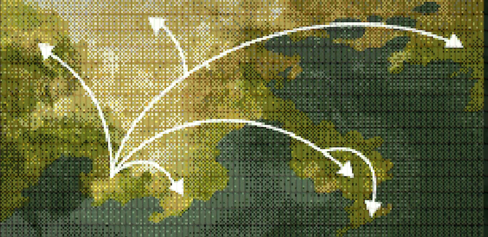

LOS SERES QUE SALIERON DEL AGUA Y LUEGO ABANDONARON LA CAVERNA DE ALTERNA, EMERGIERON A LA SUPERFICIE A TRAVÉS DEL ENORME CRÁTER SITUADO SITUADO ENCIMA. PARTIENDO DE ESE PUNTO, COMENZARON A EXPLORAR SU NUEVO HÁBITAT Y A EXTENDERSE POR TODOS LOS RINCONES DEL MUNDO. ESTE SUCESO HISTÓRICO CONFIRIÓ A EL CRÁTER UN NOTABLE VALOR SIMBÓLICO, Y LOS TERRITORIOS A SU ALREDEDOR RECIBIERON EL NOMBRE DE «REGIÓN DE TINTELIA». PARA LAS ESPECIES CUYA VIDA PROSPERA ACTUALMENTE EN LA SUPERFICIE, ESTA REGIÓN REPRESENTA DESDE ENTONCES «LA TIERRA DEL NUEVO COMIENZO». CON ESTOS NUEVOS SERES EXPANDIÉNDOSE A LO LARGO Y ANCHO DEL PLANETA, FUERON NACIENDO DIFERENTES CULTURAS E INUSUALES ESTILOS DE VIDA. ENTRE SUS DIVERSAS ESPECIES LOS CALAMARES Y LOS PULPOS DESTACABAN SOBRE EL RESTO GRACIAS A SU AVANZADA INTELIGENCIA Y SU… DIGAMOS «CHISPA». PUEDE DECIRSE QUE LOS MOLUSCOS OCUPARON RÁPIDAMENTE LA POSICIÓN DOMINANTE DEL PLANETA.
UNOS 5000 AÑOS DESPUÉS DEL ÉXODO DE ALTERNA, NACIÓ ALGUIEN DE SINGULAR IMPORTANCIA. SE TRATA DE UN CALAMAR DE INSÓLITAS FACULTADES CUYA FAMA EN LA REGIÓN DE TINTELIA SE PROLONGA HASTA HOY EN DÍA. SE TRATA DE UN CALAMAR DE INSÓLITAS FACULTADES CUYA FAMA EN LA REGIÓN DE TINTELIA SE PROLONGA HASTA HOY EN DÍA. SU APARICIÓN ES COMPARABLE A LA LLEGADA DE UN PROFETA, CUYAS NUMEROSAS REVELACIONES SE DIFUNDEN ENTRE SUS IGUALES CALAMARES. A PARTIR DE ESTE PUNTO, LA CULTURA CALAMAR EXPERIMENTÓ AVANCES SIN PRECEDENTES. SE ESTABLECIERON LOS CIMIENTOS DE LA CIVILIZACIÓN CEFALÓPODA MODERNA Y DIO COMIENZO UNA NUEVA ERA PARA ESA ESPECIE. HOY EN DÍA ESE INDIVIDUO EN PARTICULAR ES CONOCIDO Y RESPETADO COMO EL PATRIARCA DEL PUEBLO INKLING DE LA ERA MODERNA.